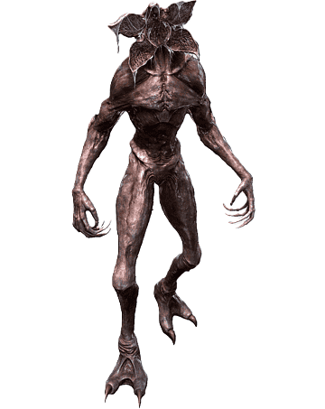
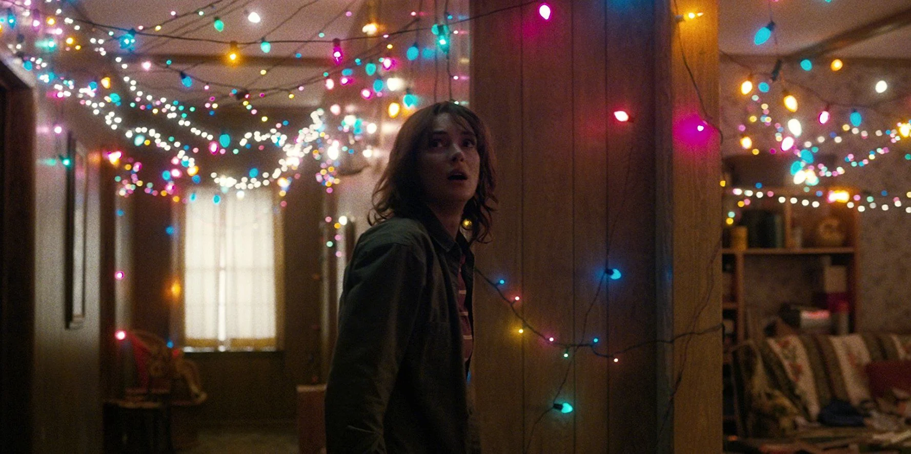
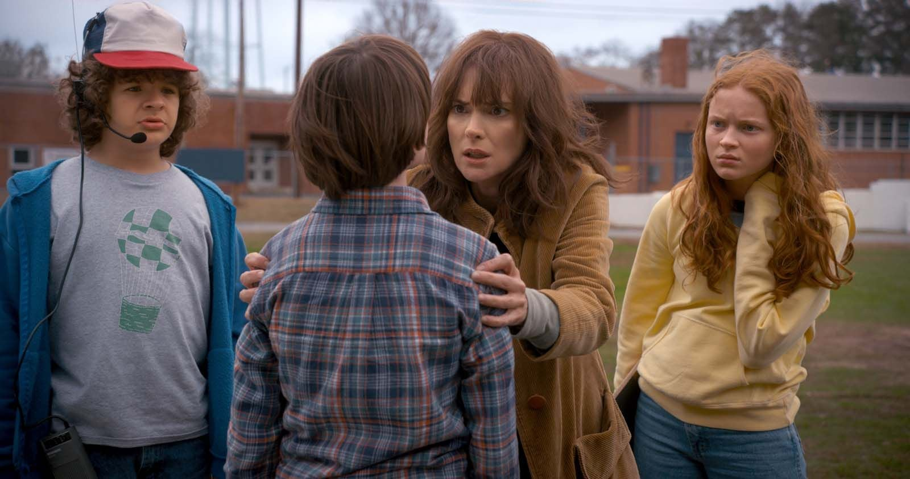
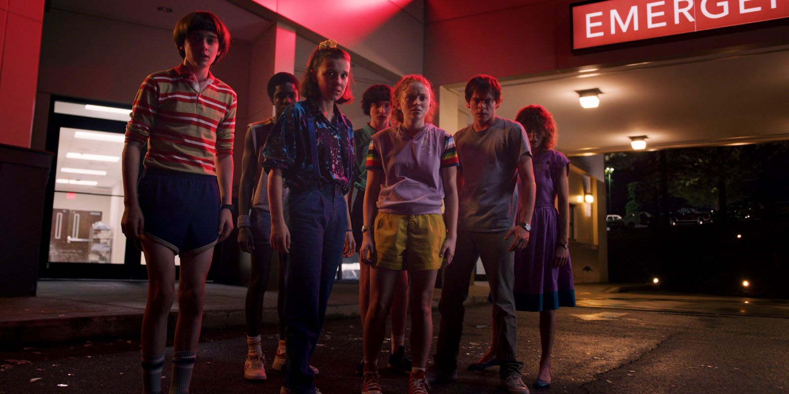
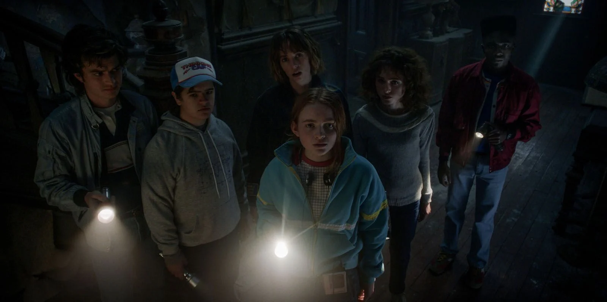
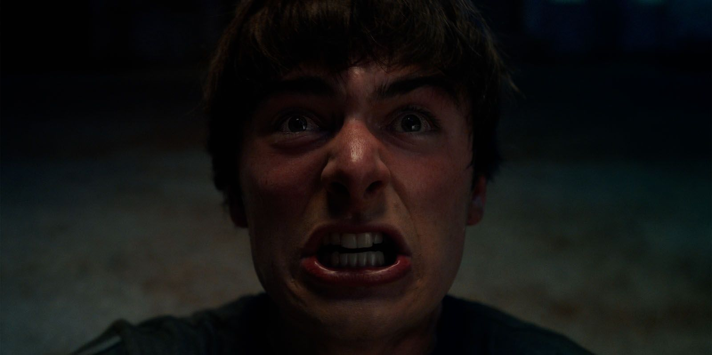
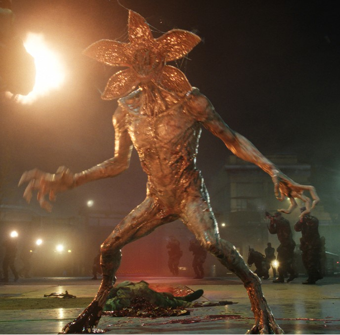
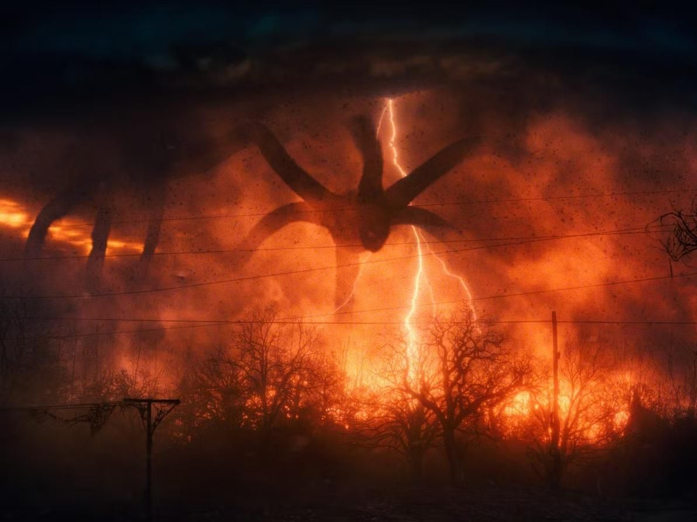
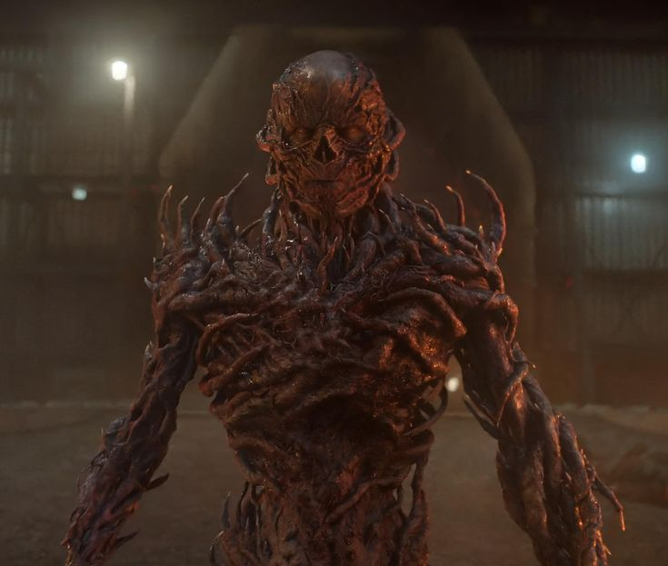

1983. Hawkins, Indiana. Um garoto desaparece.
Uma menina sem nome aparece. E o mundo nunca mais será o mesmo.
Uma cidade comum, amigos inseparáveis, e um segredo enterrado fundo demais para ficar escondido. Stranger Things é sobre o que acontece quando o mundo que você conhece começa a rachar.


Will Byers desaparece. Eleven foge do laboratório. O Mundo Invertido se revela pela primeira vez.

Will retorna marcado. O Devorador de Mentes ameaça Hawkins de dentro pra fora.

O verão esconde um perigo no Starcourt Mall. Os soviéticos tentam reabrir o portal.

O grupo está separado. Vecna assombra adolescentes através de traumas e visões.

O confronto definitivo. O destino de Hawkins — e do mundo — será decidido.

Criatura sem rosto originária do Mundo Invertido. Caça usando o olfato e é atraída pelo sangue. Foi o primeiro grande terror que Hawkins enfrentou.

Uma entidade colossal que domina criaturas do Mundo Invertido como extensões de si mesmo. Sua influência sobre Will quase destruiu Hawkins.

O vilão mais pessoal da série. Com poderes psíquicos, ele explora traumas e culpa para destruir suas vítimas de dentro pra fora.
Vote no seu favorito de Hawkins
Você precisa estar logado para votar.
Fazer loginVocê votou em: